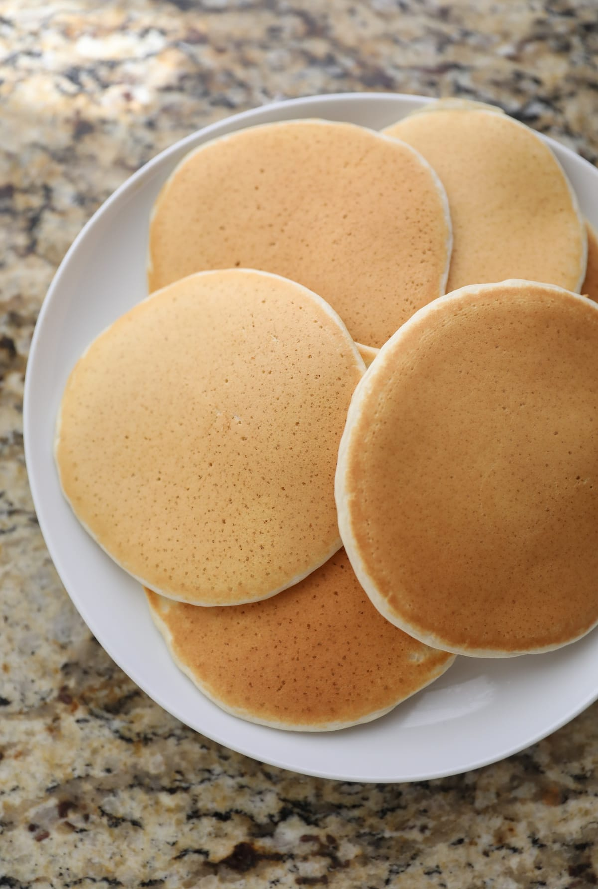

Protein Pancake

Description
Power up with these tasty protein pancakes! Perfect for any day of the week! Serve warm with yogurt, butter, syrup, or fruit.
Ingredients:
- 1 cup ground oats
- ¾ cup blanched almond flour
- ½ cup coconut flour
- ⅓ cup protein powder
- 1 tablespoon chia seeds
- 1 tablespoon flax seed meal
- 1 teaspoon baking powder
- ½ teaspoon salt
- ¼ teaspoon ground cinnamon
- 1 cup water
- ½ cup whole milk
- 2 large eggs
- 1 tablespoon coconut oil, or more as needed
- 1 teaspoon vanilla extract
- 2 teaspoons coconut oil, or as needed
- 1 cup fresh blueberries, or to taste
Steps
- Combine oats, almond flour, coconut flour, protein powder, chia seeds, flax seed meal, baking powder, salt, and cinnamon in a medium bowl.
- Combine water, milk, eggs, 1 tablespoon coconut oil, and vanilla in a small bowl. Mix into dry ingredients.
- Heat 1 teaspoon coconut oil in a nonstick pan over medium heat. Pour 1/3 cup batter into the pan. Spread out with the back of a spoon if needed. Add some of the blueberries. Cook for about 2 minutes. Flip with spatula. Cook for additional 2 minutes. Remove to a plate and continue with remaining batter, adding more oil if needed.